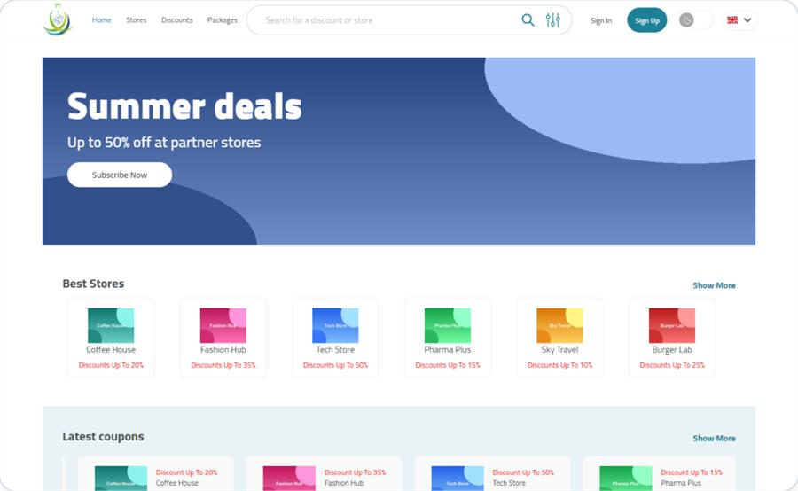
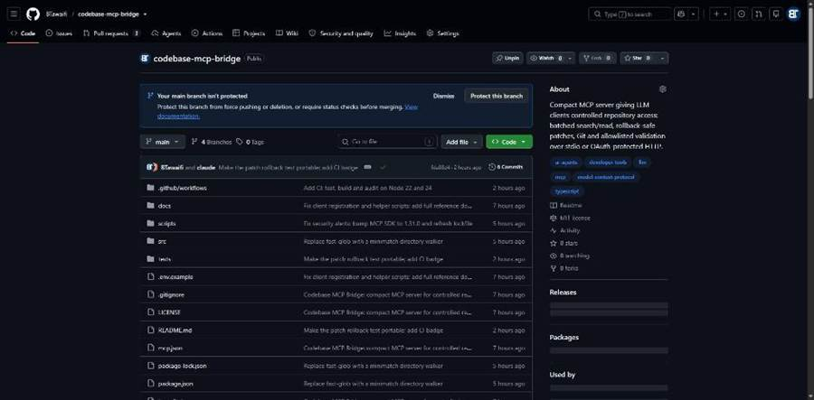
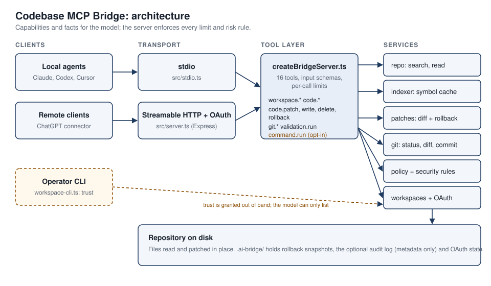
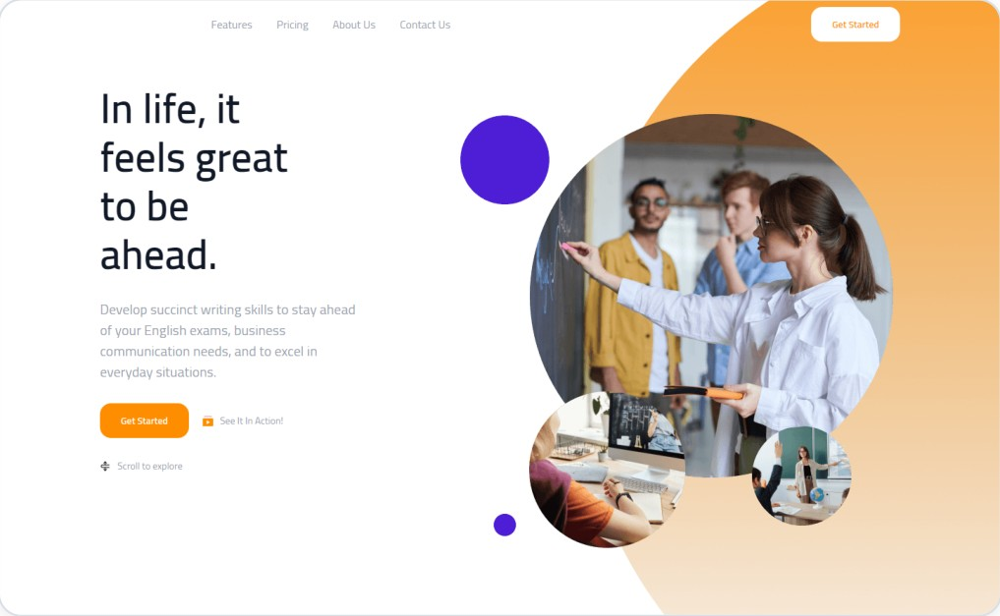
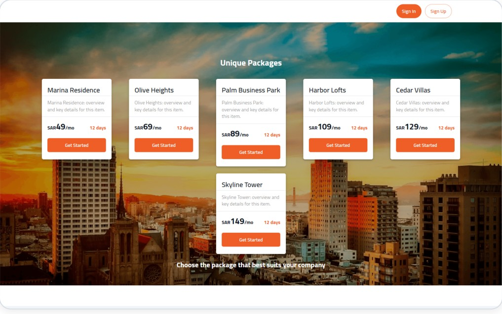
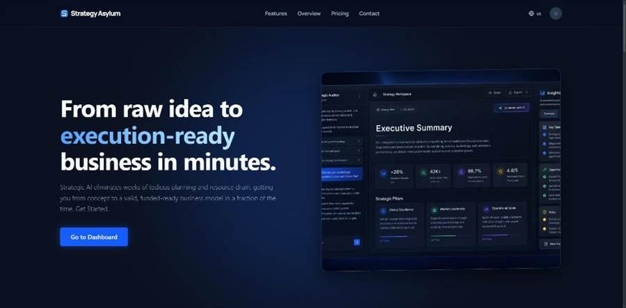
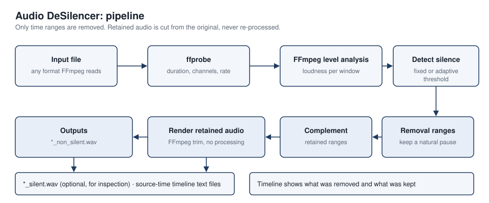
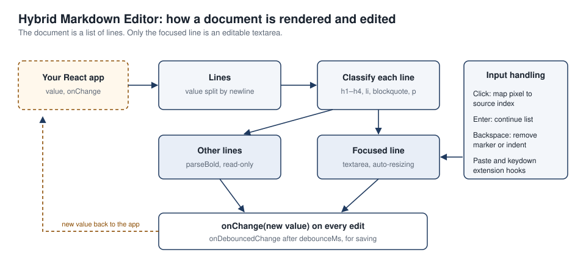
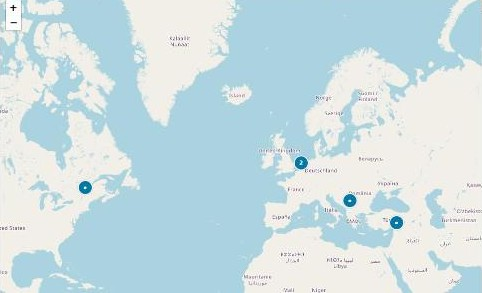
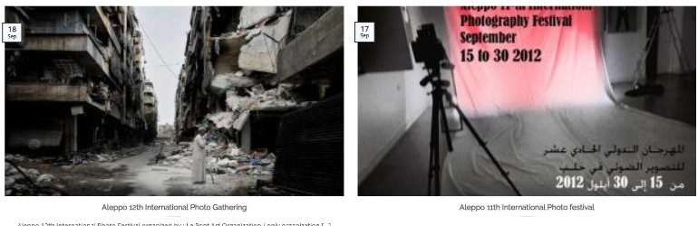

Boutros Tawaifi
Senior Full-Stack Engineer
boutros.m.tawaifi@gmail.com · LinkedIn · GitHub · Download CV (DOCX)
About
Full-stack engineer with five years building and running a live, real-time sports-data platform: 50K+ matches reported across 70+ countries, with customer feeds over WebSocket, RabbitMQ and REST.
TypeScript, Node.js, React, Angular, PostgreSQL and AWS. I build with coding agents daily, and every change is reviewed and tested.
Selected projects
Coupon and membership marketplace (client)
Sole front-end developer of a bilingual (Arabic/English) customer web app and admin panel with subscriptions, QR coupon redemption and role-based permissions. Built with React, Redux Toolkit and Material UI, working with the back-end engineers and business stakeholders on API contracts and design specs. Screenshot uses mock data.

Codebase MCP Bridge
A Model Context Protocol server that gives AI coding tools controlled access to a repository: batched search and read, patches with rollback, Git, and allowlisted validation over stdio or OAuth-protected HTTP.


E-learning platform (client)
React front end for a schools expansion: admin, principal, teacher and student roles with reworked permissions, plus payment and subscription screens. Screenshot shows the public landing page.

Property-evaluation SaaS (client)
Paymob payments (checkout, refunds, payment status) and company subscription and evaluation features, built in a small front-end team with a lead developer coordinating the work and reviewing code. Screenshot shows the public landing page with mock data.

Image moderation (university project)
OpenAI CLIP zero-shot image classification on FastAPI workers, with NestJS microservices (gateway, auth, upload, storage) over RabbitMQ.
Strategy Asylum
A Next.js and PostgreSQL web app: an AI co-pilot that guides business-strategy frameworks such as SWOT and PESTLE and generates strategy documents.

Audio DeSilencer
A Python package and CLI that detects and removes silence from audio, with configurable thresholds and FFmpeg-backed format support. Installable with pip.

Hybrid Markdown Editor
A reusable React markdown editor that renders inactive lines and turns the focused line into an inline editor, built as a controlled component with an extensions API.

Festival and media website (WordPress)
Rebuilt in February 2025 for a Syrian arts organisation, with a custom interactive media map built on Leaflet: a map of festival and media activity across countries, with pins for each location.


Association website (WordPress)
WordPress and Flatsome build with a custom child theme, for a UAE financial markets association.